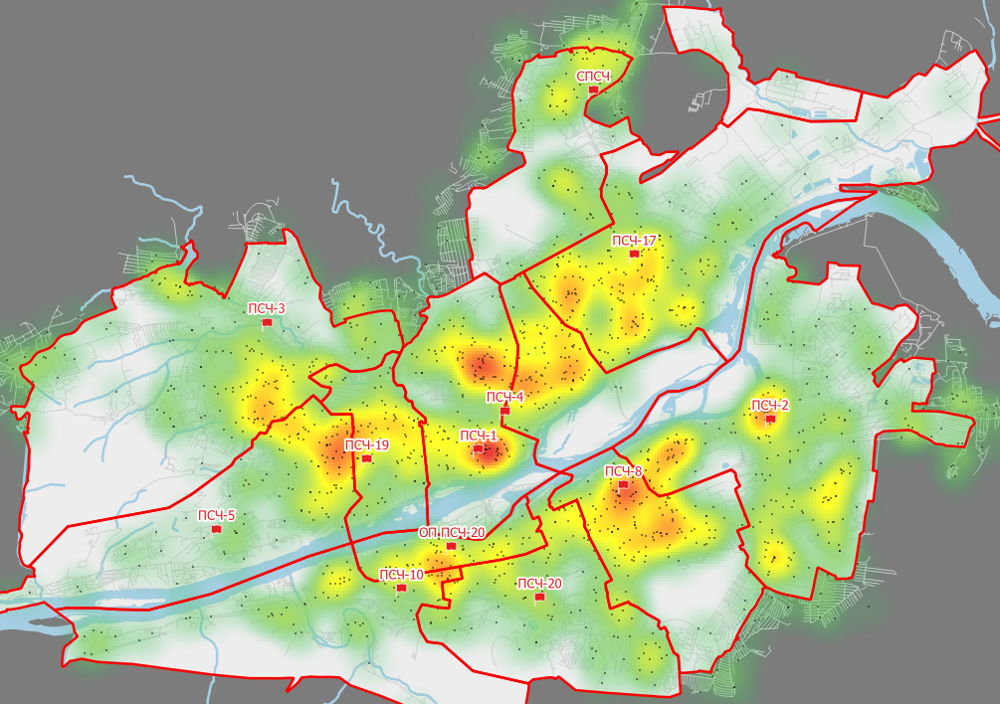

8 марта 2023
ежедневно
2023 март
данные
Ежедневный отчет
Среда.
Генерация потока пожаров
Без координат
import numpy as np
import pandas as pd
MIN_IN_YEAR = 24*60*365 # Минут в году
# Сгенерируем возможное количество пожаров
fires_per_year = 800 # Пожаров в год
# Вероятность возникновения пожара
fires_probability_per_min = fires_per_year / MIN_IN_YEAR
print(
f"Вероятность возникновения пожара в минуту: {fires_probability_per_min}"
)
# Стартовые значения день/час/минута
d=0
h=0
m=0
fires = pd.DataFrame()
for i in range(1, MIN_IN_YEAR):
if m>=60:
m=0
h+=1
if h>=24:
h=0
d+=1
if np.random.random()<=fires_probability_per_min:
fires = pd.concat([
fires,
pd.DataFrame(
{
'date': pd.to_datetime(f'{1}-01-01 {h}:{m}') + pd.Timedelta(d - 1, unit='d'),
'duration':[np.random.randint(5,120)]
}
)
])
m+=1
fires.index = pd.to_datetime(fires['date'])
fires = fires.drop('date', axis=1)
print("Пожаров произошло:", len(fires))
fires.head()С координатами ГДС (с использованием библиотеки FUDO)
Только при наличии заранее подготовленной карты.
from fudo import tools, gds, units, calculations, common, optimization, analize, output
from fudo.profiles import SP
from fudo.approaches import VNIIPO2022 as fcm
import matplotlib.pyplot as plt
import geopandas as gpd
import warnings
warnings.filterwarnings("ignore")
#---ГДС
# Исходные данные
# --- Наименование географической территории для которой будут выгружены данные:
регион = "Красноярский край, Россия"
город = "Красноярск"
# --- Путь к папке с картой (если указано "", значит карта находится в том же каталоге, что и этот ноутбук)
путь_карта = ""
# --- Путь к файлу модели СГДС
путь_сгдс_модель = f"{путь_карта}fire_data/rng.ml"
# --- Путь к файлу слоя QGIS СГДС
путь_сгдс_геоданные = f"{путь_карта}fire_data/rng.gpkg"
# --- Путь к файлу с перечнем подразделений
путь_подразделения = f"{путь_карта}fire_data/units.gpkg"
# --- Путь к файлу с границами районов выезда
путь_границы_рв = f"{путь_карта}fire_data/units_areas.gpkg"
# Путь по которому будут сохраняться профили прибытия
путь_ПП = f"{путь_карта}fire_data/AP.gpkg"
# Загрузка СГДС с жесткого диска
СГДС = gds.get_GDS(путь_сгдс_модель, путь_сгдс_геоданные, регион)
# Получение полигона границ населенного пункта
границы_город = common.load_settlement_borders("", "Красноярск", file = 'data/city.gpkg', field="name")[1]
# Обрезка СГДС до размеров ГДС и соединение фрагментов
# --- Для случая, когда город состоит из одного крупного фрагмента
ГДС=СГДС
# Расчет времени следования для участков ГДС
ПС = SP()
ПС.set_speeds_5([30, 25, 20, 10, 5])
gds.set_road_times(ГДС, ПС.sp)
# Получение набора данных узлов ГДС
узлы_гдс = gds.get_nodes_gdf(ГДС)
# Загрузка данных о подразделениях
подразделения = units.load_from_gpkg(ГДС, путь_подразделения, границы_город, layer="Предлагаемые")
# Загрузка границ районов выезда
границы_рв = units.load_ride_areas_from_gpkg(путь_границы_рв)
#--- Собственно генерация
MIN_IN_YEAR = 24*60*365 # Минут в году
# Сгенерируем возможное количество пожаров
fires_per_year = 1600 # Пожаров в год
# Вероятность возникновения пожара
fires_probability_per_min = fires_per_year / MIN_IN_YEAR
print(
f"Вероятность возникновения пожара в минуту: {fires_probability_per_min}"
)
# Стартовые значения день/час/минута
d=0
h=0
m=0
fires = pd.DataFrame()
for i in range(1, MIN_IN_YEAR):
if m>=60:
m=0
h+=1
if h>=24:
h=0
d+=1
if np.random.random()<=fires_probability_per_min:
fire = узлы_гдс.sample(1)
fire['date'] = pd.to_datetime(f'{1}-01-01 {h}:{m}') + pd.Timedelta(d - 1, unit='d')
fire['duration'] = np.random.randint(5,120)
fires = pd.concat([
fires,
fire
])
m+=1
fires.index = pd.to_datetime(fires['date'])
# fires = fires.drop('date', axis=1)
fires = fires[['duration', 'geometry']]
print("Пожаров произошло:", len(fires))
fires.head()
На Рисунок 1 видно, что случайным образом сгенерированные пожары в узлах ГДС размещаются исходя из плотности узлов ГДС. Поэтому в качестве точек пожаров лучше использовать например здания. А также следует учитывать характер объектов, поэтому реальная система моделирования будет иметь более сложный алгоритм.